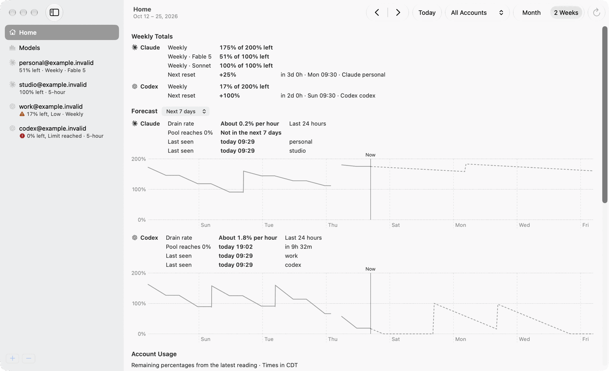
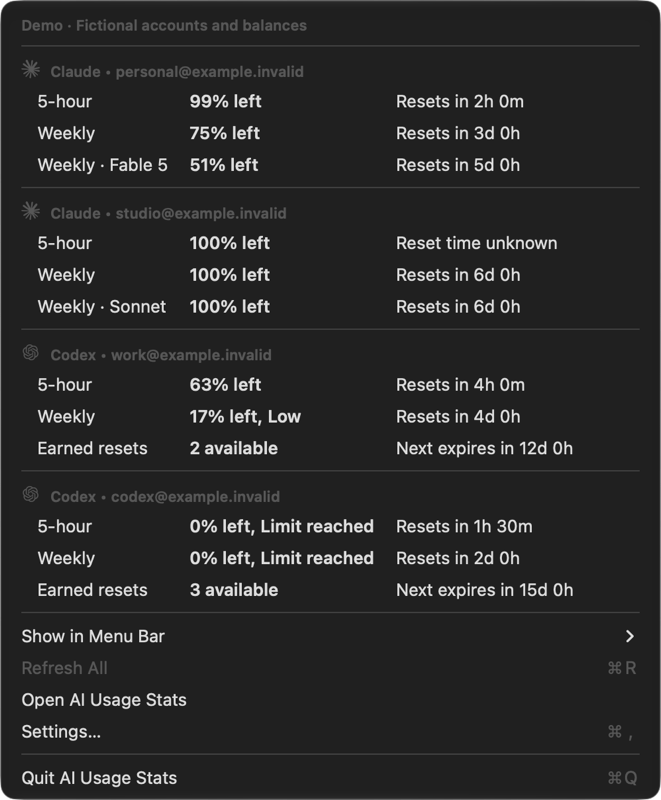
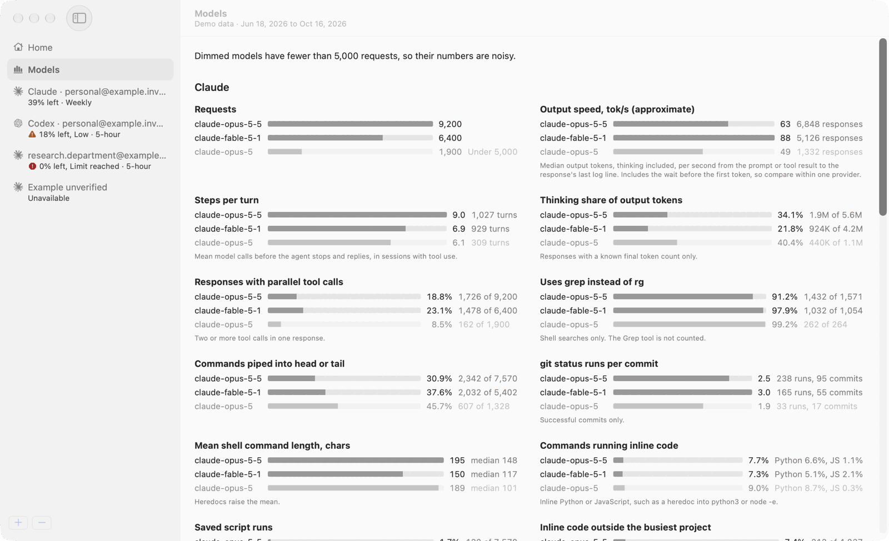

See how much of your Claude and Codex limits are left, on every account, right from your Mac's menu bar.
Keep a private history of how you use them, stored only on your Mac.
brew install --cask parkerrex/tap/ai-usage-stats
Version 0.2.0 · macOS 14 or later · Apple silicon and Intel · Signed and notarized by Apple

How it works
-
Glance at the menu bar
A number shows how much quota is left. By default it is the lowest number for Claude and for Codex. Pick the accounts you use and each one gets its own number.
-
Click for every account
The menu lists each account's 5-hour, weekly, and model limits, and when each one resets.
-
Open Home
One table for all accounts, a calendar of upcoming resets, weekly totals, pace, and a forecast.
-
Open Models
See how each Claude and Codex model behaves in your own work.
Every account in one menu
Keep several Claude and Codex accounts side by side without touching your everyday logins.
- 5-hour, weekly, and model limits for each account, with when each one resets.
- With two or more accounts of one provider, the menu also shows their weekly total and next reset.
- Readings refresh every 5 minutes, or when you choose Refresh All. Old readings say Last known, so you never mistake them for live numbers.

Weekly totals, pace, and a forecast
Weekly totals
With two or more accounts of one provider, Home adds up the weekly quota left across them. It shows when the next reset comes and how much it gives back. Claude and Codex totals are always kept apart.
Pace
Each account's weekly cell says whether it is ahead of or under pace.
Forecast
Home keeps each reading and shows how fast your weekly total is going down, when it would reach 0%, and a chart of the next 1 or 7 days. Gaps in the history stay gaps.
See how each model works for you
The Models page compares Claude and Codex models using your own logs: output speed, steps per turn, thinking share, parallel tool calls, and the shell commands each one runs, such as grep instead of rg, piping into head or tail, or inline Python and JavaScript.

Your data stays on your Mac
The forecast and the Models page come from a history the app keeps on your Mac. Nothing in it is uploaded.
- What it reads
- Claude Code logs in
~/.claude/projectsand Codex logs in~/.codex/sessionsand~/.codex/archived_sessions. It reads them in the background after each refresh and skips files that have not changed. - What it stores
- Derived facts only: quota readings over time, and for each model response its model, time, and token counts. For each shell command it keeps the length, line count, a few categories, and the program names with every argument removed, such as
grep | head. A project is a salted hash of its folder path. - What it never stores
- Prompts, replies, tool output, file contents, command text, or folder names.
- Read-only monitoring
- It only reads usage. It never buys credits, changes plans, or sends AI requests to check your usage.
- No telemetry
- The app has no tracking or telemetry.
- Where it lives
~/Library/Application Support/AI Usage Stats/history.sqlite. It is kept until you delete it. To clear it, quit the app and delete the files whose names start withhistory.sqlite.
Install
With Homebrew
brew install --cask parkerrex/tap/ai-usage-statsOr download it
Get the AI-Usage-Stats-0.2.0.zip file from the latest release, unzip it, and drag AI Usage Stats into your Applications folder.
The app is signed and notarized by Apple, so it opens without security warnings.
Requirements
- macOS 14 or later.
- Apple silicon or Intel Mac.
- Codex accounts need the Codex CLI or the ChatGPT desktop app installed.
Set it up
- Open AI Usage Stats from Applications. A small gauge icon appears in your menu bar.
- Click it, choose Add Claude Account…, then sign in and approve on claude.ai in your browser.
- Add a Codex account from the window with the + button, using your current Codex login or a different one.
- Open Show in Menu Bar to pick the accounts you care about.
Questions
Does it send my data anywhere?
Your usage history is stored only on your Mac, and nothing in it is uploaded. The app has no tracking or telemetry. To show your quota, it reads your usage from Claude and from the Codex CLI.
Does it use my quota?
No. It never sends AI requests to check your usage. It only reads usage, and it never buys credits or changes plans.
Which accounts does it support?
Claude and Codex subscription accounts, as many as you like, side by side. Adding one does not change your everyday logins. You can also connect Claude API credits to a Claude account.
Are the numbers official?
Claude usage and API credits come from endpoints Anthropic hasn't documented, so they can change without notice. Codex usage comes from the Codex CLI.
Why does it ask for Keychain access?
On first launch, macOS may ask whether the app may read the sign-ins it saved.
Is it free and open source?
Yes. Releases are free to download, and the source is on GitHub under the MIT license.
Know before you run out.
brew install --cask parkerrex/tap/ai-usage-stats